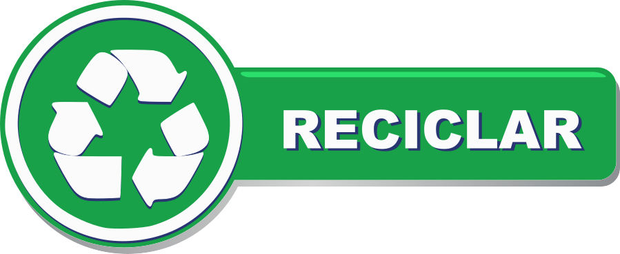

1.3 Reciclar (Tercera R)

La tercera R es Reciclar, antes de tirar los materiales que consideras desechos, piensa que se pueden transformar en otros productos, evitando así el uso de nuevos recursos naturales.
Reciclas cuando:
- Antes de tirar a la "Caneca de basura" un Residuo Sólido lo clasificas en orgánico, papel, cartón, envase de vidrio o de metal, entre otros.
- Utilizas las hojas de cuaderno o block que no utilices para crear una manualidad.
- Almacenas principalmente papel de periódico y plástico e investigas como puedes entregarlos para reciclar.
Tomado de: https://www.youtube.com/watch?v=1BkRSHMg7gE
Recuerda, estas reciclando cuando. (Coloca el cursor del mouse encima de cada imagen)
{kind=link}
{kind=link}
{kind=link}
¿Cuantas veces se puede reciclar un producto?
Sin duda el número de veces que se puede reciclar un producto depende del material, a continuación encontraras algunos datos interesantes, así que vamos a empezar:
Papel
Un mismo papel no podría estar reciclándose de forma indefinida. Para transformar este material usado en otro nuevo debe ser sometido a un proceso de pulpado, llevar a cabo distintas operaciones de lavado y pasarlo por una serie de filtros. Y esto hace que la fibra de celulosa de la que se compone se vaya deshilachando y acortado, reduciendo su consistencia y su longitud.
Se estima que la fibra de celulosa puede ser reutilizada unas seis veces.
Vidrio
Una botella de vidrio sí puede reciclarse de forma indefinida para producir otras botellas. Este material puede reciclarse al 100% y no pierde ninguna de sus cualidades. Ahora bien, existe una limitación: el color. Si esa botella es verde, no servirá para fabricar otra transparente.
Plásticos
El reciclaje de los plásticos tiene limitaciones importantes. Primero hay que triturarlo, lavarlo y fundirlo hasta formar pequeños granos de plástico. Este es un proceso térmico que va degradando el material. Se estima que sólo se puede reciclar unos 4 ó 5 veces. “Se puede incrementar este número si se añaden otros quimicos en el material virgen para mejorar sus propiedades”
Metales
Los metales pueden reciclarse una y otra vez sin fin.
Obra publicada con Licencia Creative Commons Reconocimiento Compartir igual 4.0